Scene 1Warm-Up
▶ Start hereHow your Wonder Films lessons work1-minute videoOpen ▾
🎯 TodayI can…
- explain that light travels in a straight line and can be reflected or absorbed.
- describe what happens when light hits different surfaces.
- demonstrate how rubbing (friction) produces heat energy.

🔎 Mystery specimenWhat is this giant glass beehive?
What to do: Press Inspect specimen. Move the magnifying lens over the glass, then tap 3 things you notice.
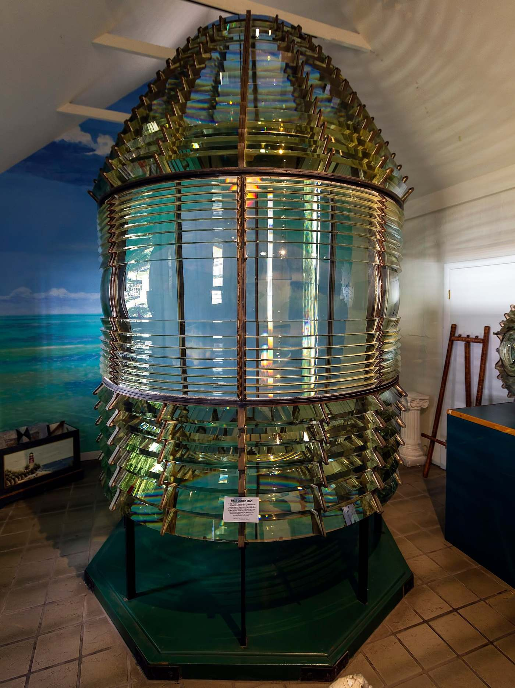
📚 Word WallWords scientists use
What to do: Tap or click each card to flip it and read what the word means.
Scene 2The Lesson
🌱 Part 1How Light Travels
Light travels in a straight line until it hits something or passes into something new, like water. That is why a flashlight makes a straight beam, and why your hand in the beam makes a shadow.
When light hits a surface, it can pass through, bounce off, bend, or be soaked up. What happens depends on the material.
🎞️ Put the scenes in orderWhere does a sunbeam go?
What to do: Drag each photo into the film strip, from first to last. You can also tap a photo, then tap a frame. Get the order right and your strip becomes a movie.
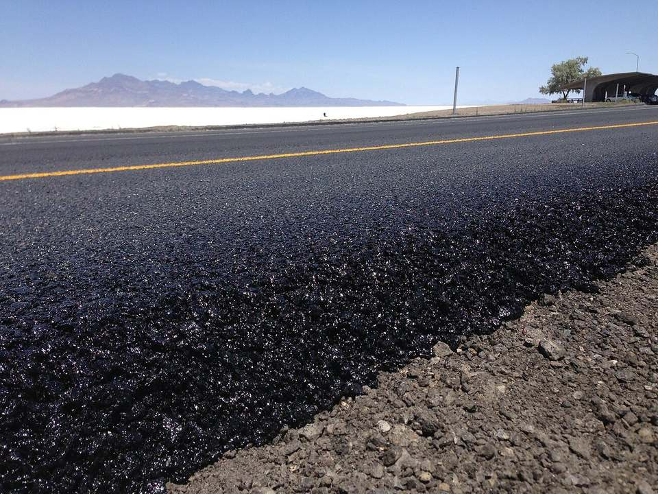
Ana says, "Dark roads get hot because dark colors pull heat out of the air." What do you think?
🌤 Part 2Reflection, Refraction, and Absorption
Reflection is when light bounces off a surface. Mirrors, calm water, and shiny metal reflect light well. Refraction is when light bends as it passes from water into air. It makes a straw in water look broken.
Absorption is when a material soaks up light. Dark colors absorb more light and turn it into heat, so a black shirt gets hotter in the sun than a white one.
🧪 The Shirt TestBlack shirt or white shirt?
What to do: Follow the steps one at a time. You will pick, test, and then explain.
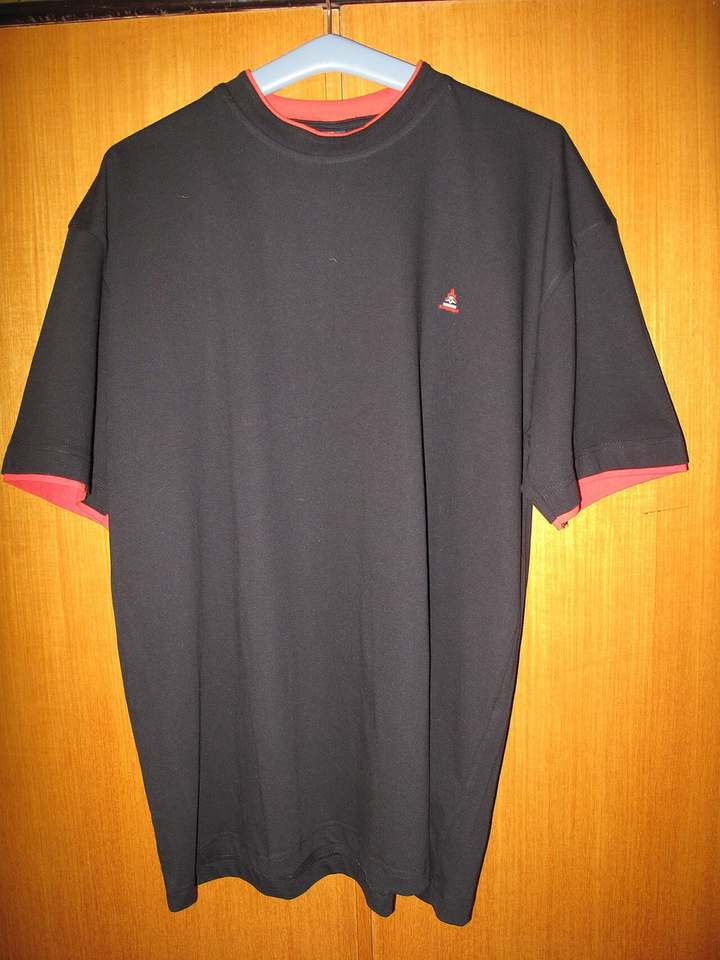
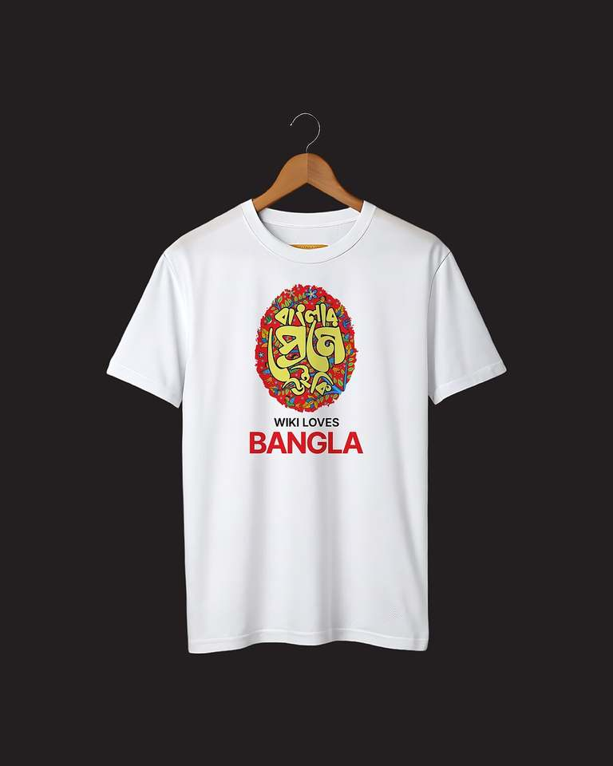

🌍 Part 3Friction Makes Heat
Heat doesn't only come from light. When two things rub together, friction changes motion energy into heat energy. Rub your hands together fast, and they warm up.
Bike and car brakes press against moving wheels to slow them down. All that rubbing makes the brakes hot.
🔦 The Light Path LabFollow one beam of light through four materials
What to do: First, make a prediction. Then brush the glowing step: drag across it (or tap it again and again) until the photo shows.
A straw in a glass of water looks broken. Is the straw really broken?
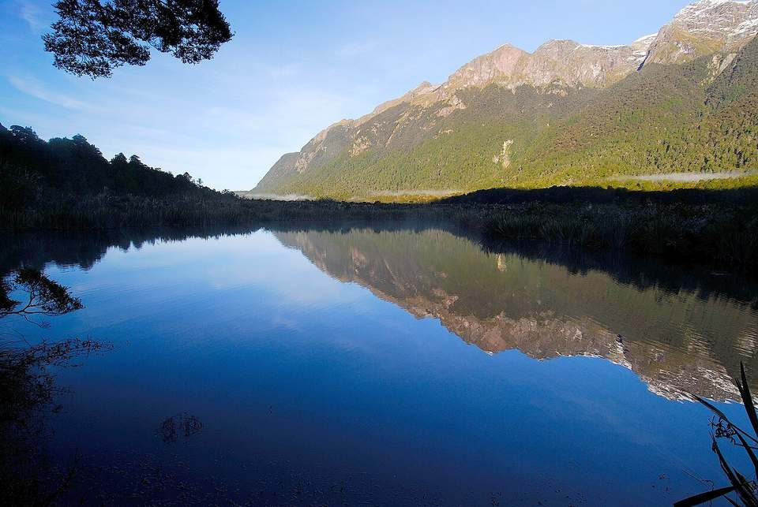
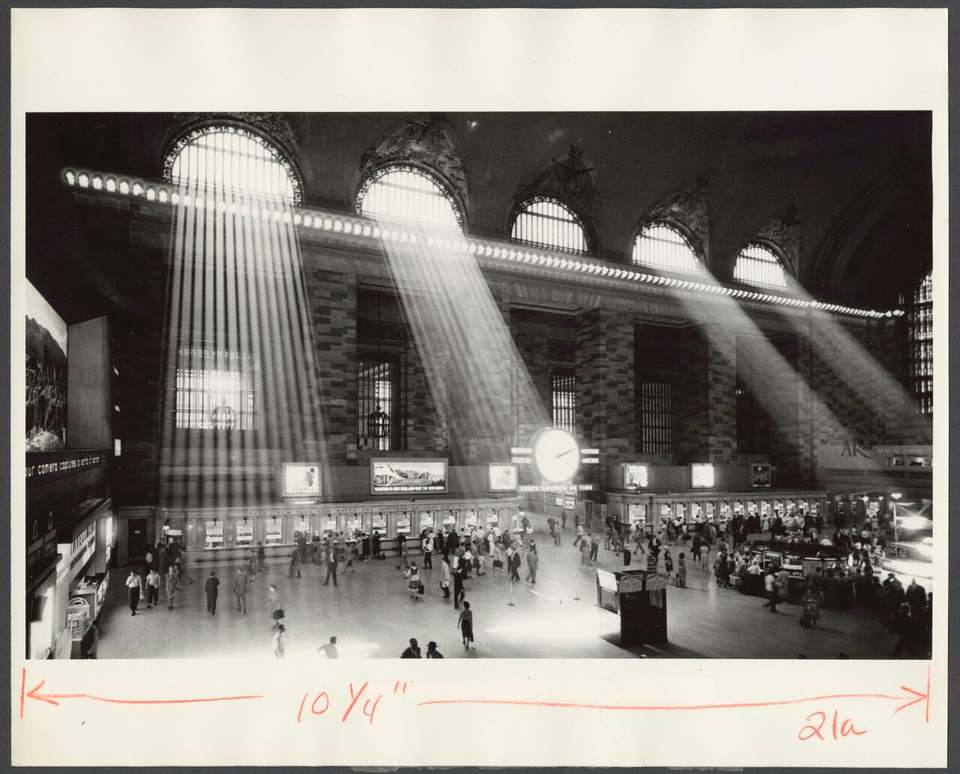
Stop 1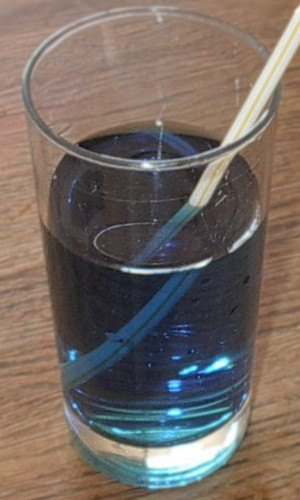
Stop 2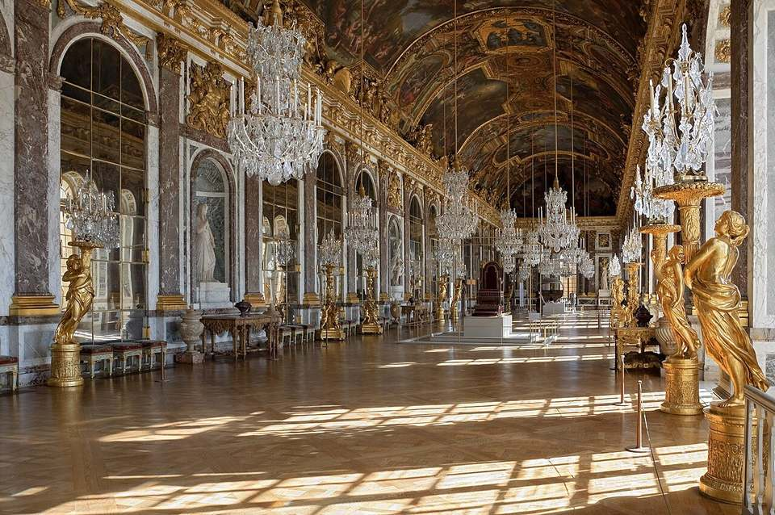
Stop 3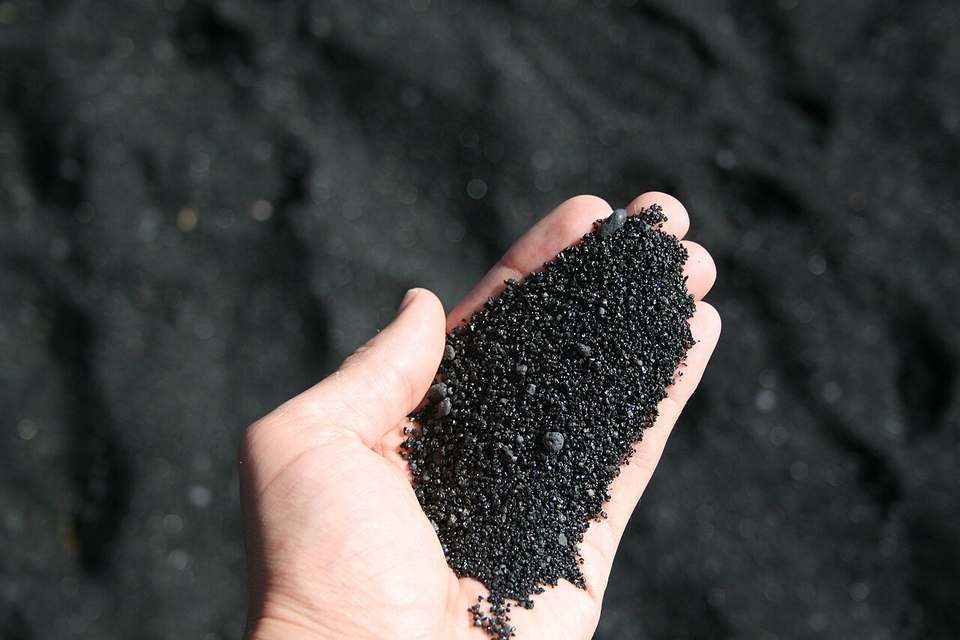
Stop 4Light travels in a straight line until it hits something. Then it can pass through (glass), bend (water), bounce off (a mirror), or be soaked up and turn into heat (black sand).
Leo says, "The straw in the water really snapped in half." Is Leo right?
A Mirror on the Moon
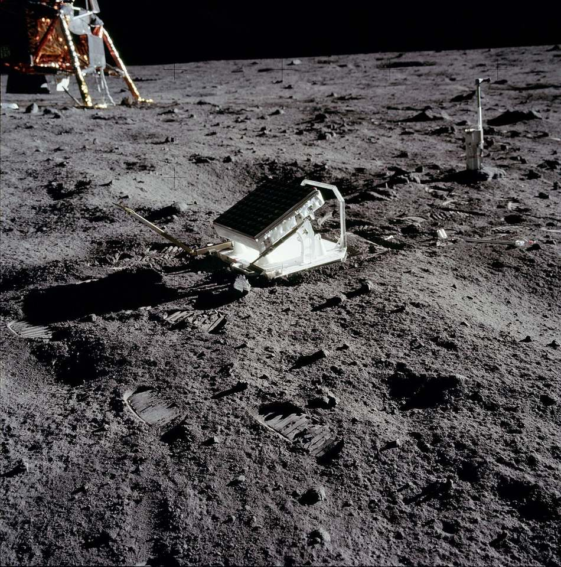
In 1969, Apollo 11 astronauts left a special mirror on the Moon. Scientists on Earth still shine laser light at it.
The light travels in a straight line to the Moon, bounces off the mirror, and comes back, in about 2½ seconds round trip!
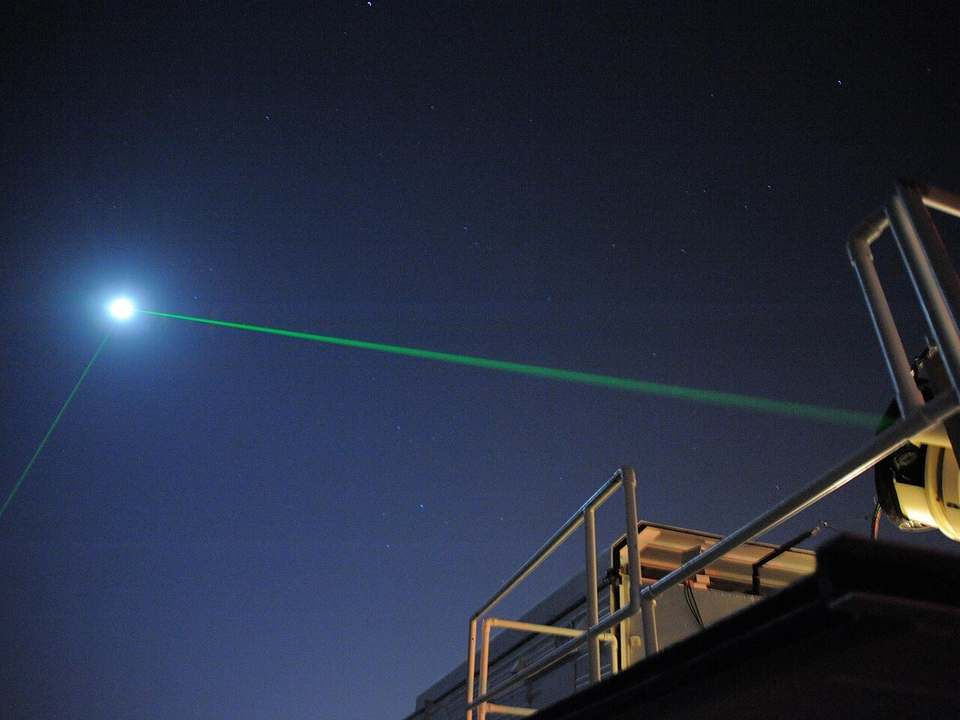
🕵️ Part 4Light & Heat Files
What to do: Pick 3 files, one at a time. Tap a clue, then name what is happening. Predict if it gets hotter or stays cooler, and watch the place appear.
| File | My observation | What happens | Hotter or cooler | My evidence |
|---|
🌍 Rebuild the sceneUse your evidence to rebuild the scene OPTIONALOpen ▾
What to do: Pick one you solved. Pick the place it points to, then pick the living things that belong there.
Pick one from your chart and explain it.
Start with: "File __ shows…"
Scene 3Self-Check
What happens when light hits a mirror?
Why does a dark-colored surface feel warmer in the sun than a light-colored surface?
A student rubs two sticks together quickly and they start to feel warm. What is causing the heat?
Scene 4Assignment
🔍 Part ALight interaction chart
What to do: Read each one. Pick the best answer, or type your answer.
1. Mirror: does light mostly reflect or absorb? How do you know?
2. White paper in the sun: does light mostly reflect or absorb? What happens to its temperature?
3. Black paper in the sun: does light mostly reflect or absorb? What happens to its temperature?
🚀 Part BShort answer
What to do: Answer in complete sentences. Use your science words.
1. Explain the difference between reflection and absorption. Use an example for each.
2. How does friction make heat? Describe what happens when you rub your hands together.
✍️ Write and explainHow do light and heat energy interact with different materials? Use evidence from your investigation.
What to do: Pick one from your evidence chart. Answer the three questions. Use at least one of the science words under the boxes.
Start with: "I learned that light can be reflected or absorbed because…"
Start with: "My investigation showed that dark surfaces…"
Start with: "Friction also makes heat energy, which I know because…"
🎨 Part CDraw and label
What to do: Draw a diagram showing a flashlight shining on three different surfaces: a mirror, white paper, and black paper. Use arrows to show where the light goes for each surface. Label whether each surface mainly reflects or absorbs the light.
🎬 Your question from Scene 1Can you answer it now?
What do you still wonder about? Write your question here. Then answer it.
📋 My answersEverything you wrote, in one place
(Your answers show up here as you write.)
How to turn in: Copy your answers and paste them into the Canvas assignment. Or download the file and upload it. Then press Save my drawing in Part C and upload your drawing too.
✅ Checklist
What to do: Tap each item when it is done. Items you finish on the page check themselves.
- My evidence chart has 3 light and heat files and my explanation.
- Part A: my light interaction chart.
- Part B: questions 1 and 2.
- Part C: my drawing and both labels.
- Write and explain, with at least one science word.
🎬 Premiere my light storyYour exhibit
What to do: Check your exhibit. Pick the one you wrote about, add your first name, then press Premiere film.
I observed…
What the light (or rubbing) did…
My evidence…
It tells us…
🎞️ This film's frames
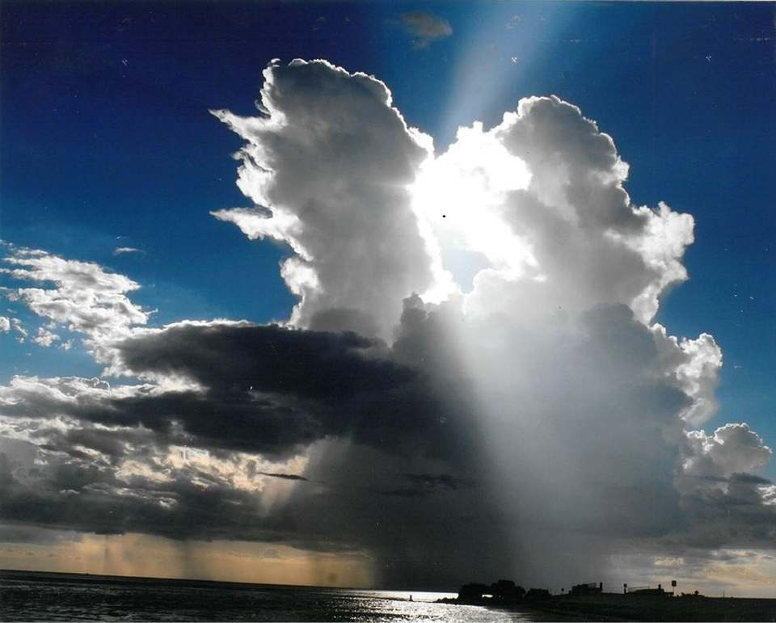
A sunbeam's trip
The Shirt Test
The Light Path Lab
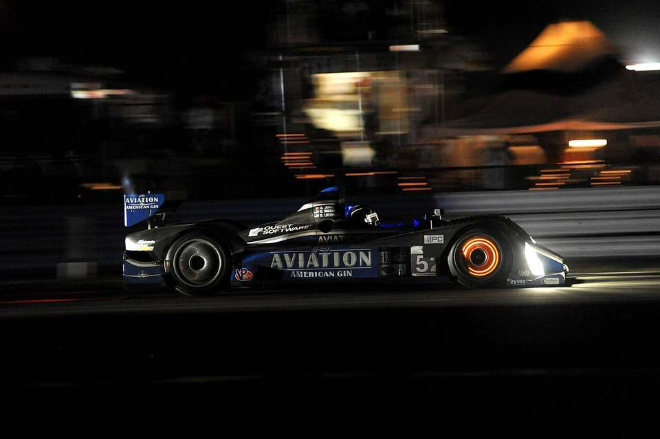
Light and heat files
Earn all four frames in the Lesson, then finish the checklist.
🔜 Coming up nextComing up next: 29.01
What Makes the Everglades Special? Next time, a new unit begins: explore Florida's river of grass and the living things that make it home.
Photo and music credits
- Key West - Houses (3883394992), Roger W from Sarasota, Florida, U.S.A., CC BY-SA 2.0
- Aerial view of Key West looking northeast (7780787310), Florida Memory, Public domain
- "Desert of asphalt" (12465228594), Jorge Láscar from Australia, CC BY 2.0
- Mall parking lot – Panorama (Sergej Majboroda via Poly Haven), Sergej Majboroda, CC0
- Daring snowboarder at Sunshine Village, maureen, CC BY 2.0
- The Alps (MODIS 2016-04-01), Jeff Schmaltz, MODIS Land Rapid Response Team, NASA GSFC, Public domain
- Butch Leitzinger 52 PC Sebring, Nave.notnilc, CC BY-SA 3.0
- Bandini GT Sebring-1960-03-26-067, Registro storico Bandini, Public domain
- Black Moshannon State Park Bow Drill 2, Ruhrfisch (talk), CC BY-SA 4.0
- Black Moshannon State Park Bow Drill 1, Ruhrfisch (talk), CC BY-SA 4.0
- Climatron, Missouri Botanical Gardens, unknown, CC BY-SA 3.0
- Blue Spring State Park run01, Ebyabe, CC BY-SA 3.0
- Mirror Lake - Southland, Jenny from Taipei, CC BY 2.0
- Green turtle Chelonia mydas is basking on Punaluu Beach Big Island of Hawaii, Brocken Inaglory, CC BY-SA 3.0
- Key West - Houses on Caroline Street (3883755431), Roger W from Sarasota, Florida, U.S.A., CC BY-SA 2.0
- Cypress reflection lake tarpon, Xrzt, CC BY-SA 4.0
- Rays of light through clouds at Indian Shores, Grendelkhan, CC BY-SA 4.0
- A Highway Mirage (5994891327), Michael from Calgary, AB, Canada, CC BY 2.0
- Goddard Spaceflight Center Laser Ranging Facility, NASA, Public domain
- Sunlight streaming through windows of main concourse of Grand Central Termina…, Rizzuto, Angelo, 1906-1967, photographer, Public domain
- Refraction-with-soda-straw-cropped, User Bcrowell on en.wikipedia, CC BY-SA 3.0
- Chateau Versailles Galerie des Glaces, Myrabella, CC BY-SA 3.0
- Punaluu Black Sand Beach, Hawaii, USA6, Diego Delso, CC BY-SA 3.0
- The Sun by the Atmospheric Imaging Assembly of NASA's Solar Dynamics Observat…, NASA/SDO (AIA), Public domain
- Crepuscular Rays Florida, Terry Foote (talk · contribs), CC BY-SA 4.0
- Forest sky mirror lake, Rosendahl, Public domain
- 2014-06-22 17 50 35 Newly paved segment of Alternate U.S. Route 93 in Elko Co…, Famartin, CC BY-SA 3.0
- 2014-07-05 12 57 50 Freshly paved ramp at the Bonneville Salt Flats Rest Area…, Famartin, CC BY-SA 4.0
- Key West Light lens FL1, Acroterion, CC BY-SA 4.0
- Ironed black T-shirt (001), Juan de Vojníkov, CC BY-SA 3.0
- Wiki Loves Bangla T-Shirt White, Moheen Reeyad, CC BY-SA 4.0
- Apollo 11 Lunar Laser Ranging Experiment, NASA, Public domain
- Music: Clair de lune, from Suite bergamasque (Claude Debussy), public domain recording (via Wikimedia Commons).
- Opti the owl: Optima Academy. Sound effects are made by the page. The sunbeam movie, the Shirt Test, and the Light Path Lab are models; every place photo is real. The cypress reflection photo has a color filter added by its photographer.